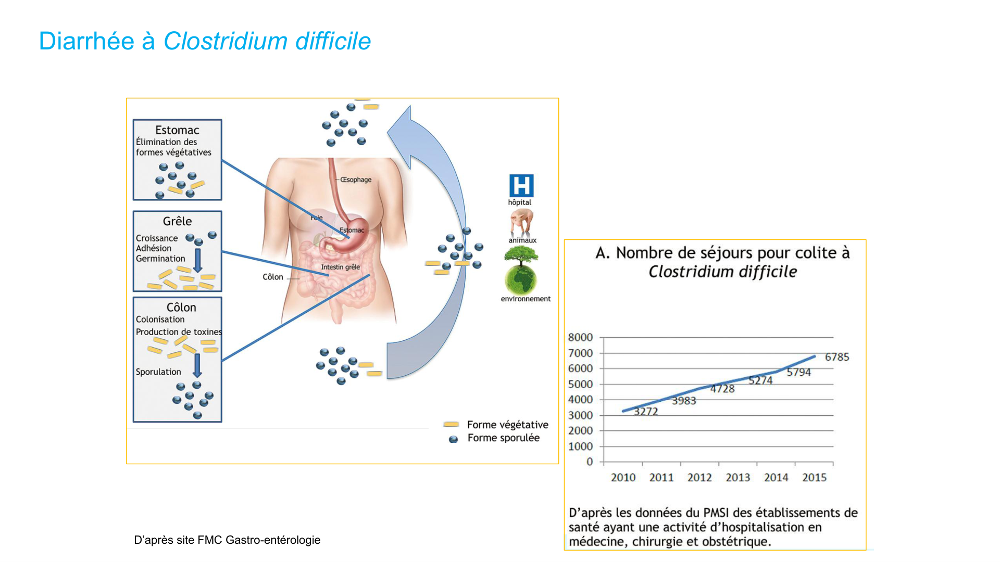
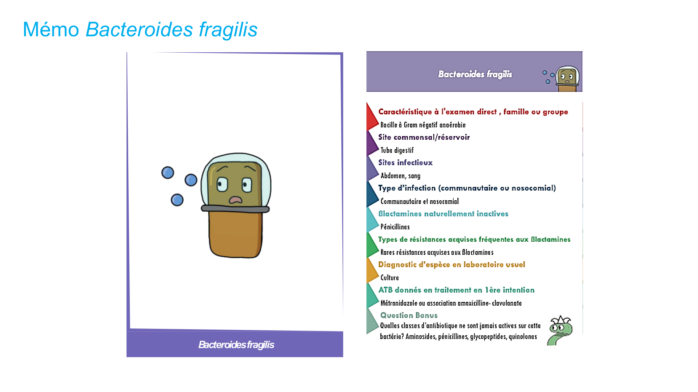
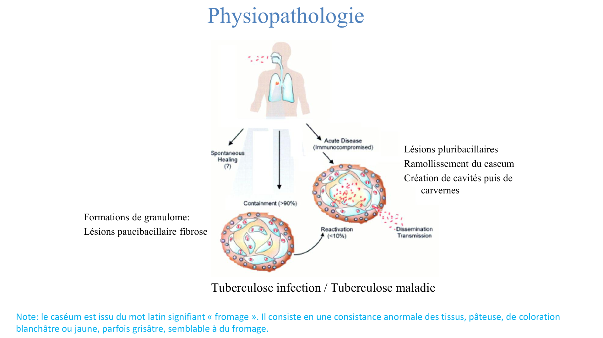
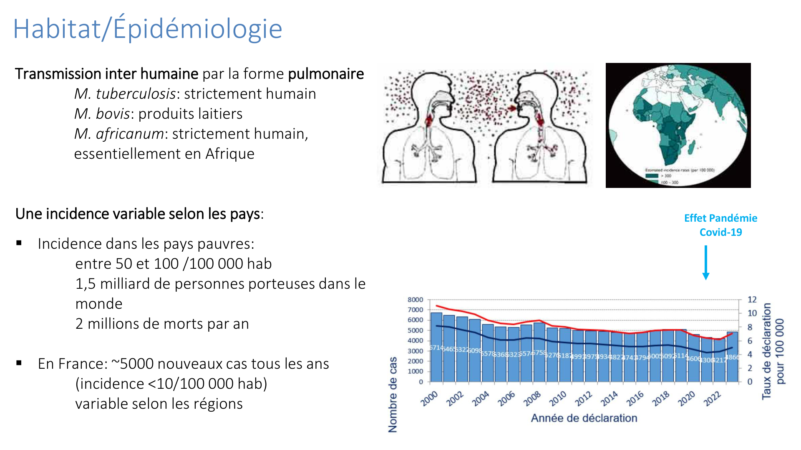
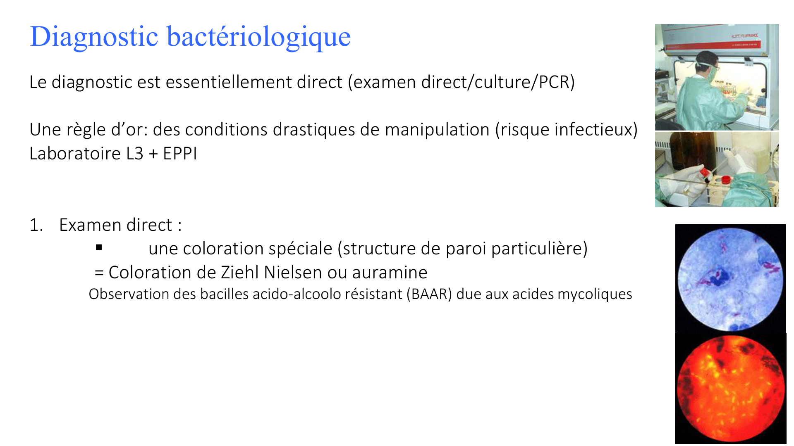
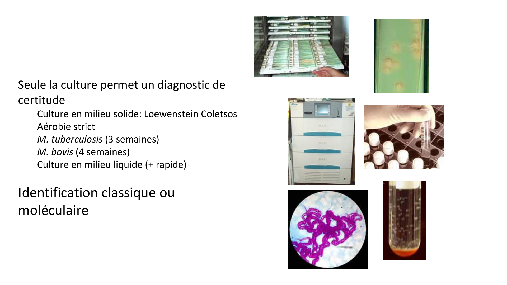
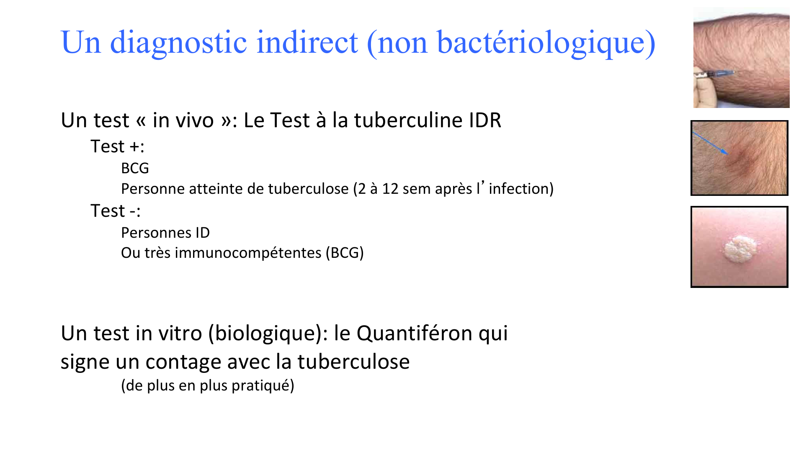
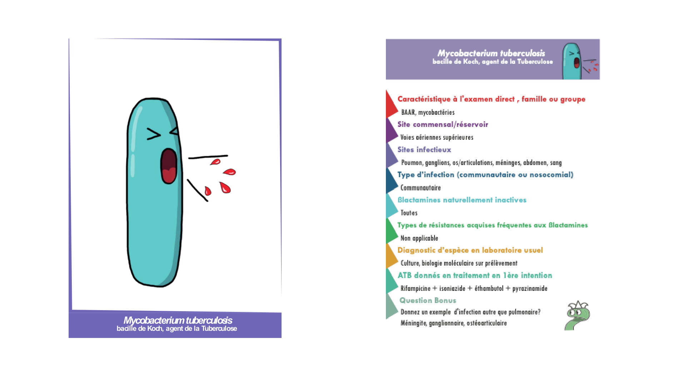
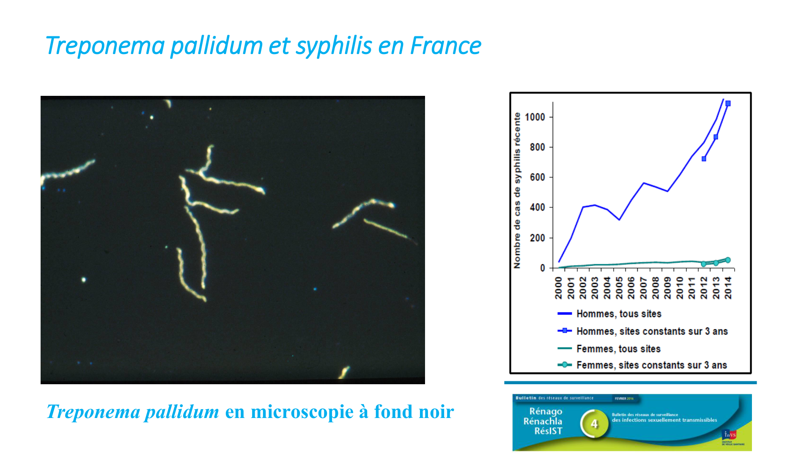
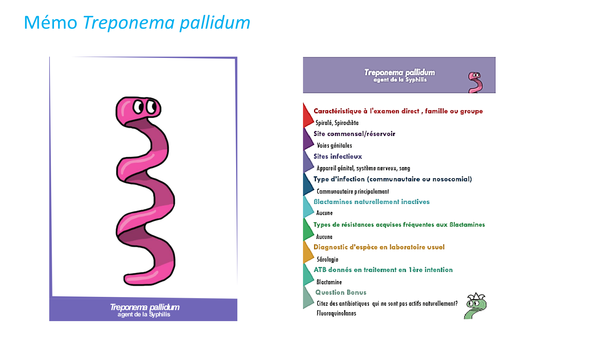

D'après le cours du Pr Brigitte Lamy (avec M. Lescat), « Les bactéries à croissance difficiles ». Pivots : piège / point clé · diagnostic · traitement. BAAR = bacille acido-alcoolo-résistant · DO = déclaration obligatoire. Figures du cours intégrées.
Partie 1 · Définition & anaérobies
1 · Définition & stratégie diagnostique
Bactéries à croissance difficile = ne cultivent pas dans les conditions standards du laboratoire.
Causes : soit « exigeantes » (nutriments particuliers absents des milieux usuels), soit intracellulaires obligatoires (pas de cellules = pas de culture).
Quel outil pour quel germe ? — selon le groupe, le diagnostic repose surtout sur la culture (anaérobies, mycobactéries), la sérologie et/ou la biologie moléculaire (intracellulaires, spirochètes).
2 · Les anaérobies strictes
Très nombreuses espèces (bacilles & cocci, Gram+ et Gram−), ne tolèrent pas l'oxygène, souvent dans des infections polymicrobiennes, issues du microbiote ou de l'environnement.
Clostridium (bacilles Gram+, sporulés)
Espèce
Pathologie
Points clés
C. tetani
Tétanos (toxine, SNC)
Prévenu par le vaccin (⚠️ rappels). Pathogène par toxine → pas d'intérêt d'une antibiothérapie.
C. botulinum
Botulisme (toxine)
Conserves mal stérilisées +++ (épidémie Bordeaux 2023). Non éradicable (spores résistantes).
C. difficile
Colite pseudo-membraneuse
Voir ci-dessous (+++).
⚠️ Clostridioides difficile — bacille Gram+ anaérobie sporulé, 1re cause de diarrhée nosocomiale (en hausse en communautaire), agent de la colite pseudo-membraneuse ; portage asymptomatique fréquent. FdR : hospitalisation (ou ATCD), antibiothérapie (déséquilibre du microbiote, ex. amox-clav), âge. Diarrhée hydrique/séro-sanglante + hyperleucocytose. Récidive fréquente ; mortalité ~5 %.

Colite pseudo-membraneuse à C. difficile — fausses membranes jaunâtres en endoscopie.

Bacteroides fragilis — bacille à Gram négatif anaérobie, fréquent dans les infections intra-abdominales polymicrobiennes.
💊 Traitement de C. difficile : si possible arrêt de l'antibiothérapie en cours ; traitement par vancomycine (orale) ; transplantation fécale si récidive / forme grave / réfractaire. Contrôle de guérison = clinique uniquement, aucun contrôle biologique.
Partie 2 · Bactéries atypiques & intracellulaires
3 · Bactéries atypiques & intracellulaires
Ensemble hétérogène à besoins nutritionnels spécifiques, se développant dans les cellules eucaryotes :
Catégorie
Culture
Exemples
Intracellulaires obligatoires/strictes
Impossible → sérologie / PCR
Chlamydia, rickettsies, Coxiella, M. leprae
Intracellulaires facultatives
Possible mais difficile
Legionella, Brucella, M. tuberculosis
Réservoirs / transmission
Pathogènes spécifiques humains : M. tuberculosis, M. leprae, C. trachomatis/pneumoniae (interhumain).
Intracellulaires obligatoires vs facultatives — les obligatoires (culture impossible) imposent sérologie/PCR ; les facultatives sont cultivables mais difficilement.
4 · Les mycobactéries
Groupe
Espèces
M. tuberculosis complex
M. tuberculosis (bacille de Koch, 90 % de la TB humaine), M. bovis (produits laitiers ; souche vaccinale BCG), M. africanum
M. leprae
Bacille de Hansen → lèpre
MNT (mycobactéries non tuberculeuses, > 150 esp.)
Opportunistes (M. avium, M. kansasii), pathogènes cutanés (M. marinum, M. ulcerans)
Épidémiologie & physiopathologie (TB)
Transmission interhumaine par la forme pulmonaire ; M. tuberculosis strictement humain. 1,5 milliard de porteurs, 2 M morts/an ; France ~5000 cas/an (incidence < 10/100 000).
Granulome : lésions paucibacillaires (fibrose, contrôle) vs pluribacillaires (ramollissement du caséum → cavernes). Distinction tuberculose-infection (latente) vs tuberculose-maladie.

Physiopathologie TB — formation du granulome ; le caséum (« fromage ») se ramollit → cavités/cavernes riches en bacilles.

Épidémiologie — incidence élevée dans les pays à ressources limitées (50-100/100 000) ; rebond post-COVID.
Prélèvements répétés AVANT ATB : pulmonaire = 3 crachats non salivaires, tubages gastriques, LBA ; extra-pulm = biopsies, urines, sang, LCR. Envoi en ana-path ET bactério.
Diagnostic surtout direct : examen direct par coloration spéciale de Ziehl-Neelsen (ou auramine) → BAAR (acido-alcoolo-résistants, dus aux acides mycoliques).
Seule la culture = diagnostic de certitude : milieu solide Löwenstein-Jensen / Coletsos, aérobie strict, lente (M. tuberculosis ~3 sem, M. bovis ~4 sem) ; milieu liquide + rapide ; identification moléculaire.

Ziehl-Neelsen — BAAR (bacilles rouges acido-alcoolo-résistants) sur fond bleu, grâce à la paroi riche en acides mycoliques.

Culture — colonies sur milieu solide Löwenstein-Coletsos (croissance lente, plusieurs semaines).
🧪 Diagnostic indirect (TB-infection latente) : IDR à la tuberculine (test in vivo ; positif si BCG ou infection 2-12 sem ; faussement négatif si ID) et Quantiféron (test in vitro signant un contage, de plus en plus utilisé).

IDR à la tuberculine — injection intradermique, lecture de l'induration ; complétée par le Quantiféron.

Mémo M. tuberculosis (bacille de Koch) — agent de la tuberculose : BAAR, culture lente, diagnostic direct + IDR/Quantiféron.
5 · Autres intracellulaires : Legionella & Chlamydia
Legionella pneumophila
BGN intracellulaire (croissance dans les macrophages, résiste à la phagocytose).
Pneumopathie atypique sévère sur terrain d'immunodépression / âgé ; risque épidémique (congrès des légionnaires, 1976) ; maladie à DO (enquête + intervention environnementale sur la source).
Diagnostic : antigène urinaire ou milieu de culture spécifique. Paradoxe : bactérie environnementale (eau) mais à croissance fastidieuse.
Chlamydia trachomatis
Intracellulaire obligatoire → PCR (culture de routine impossible).
Principale IST bactérienne ; recherche conjointe avec le gonocoque.
Mémo Chlamydia trachomatis — intracellulaire obligatoire, diagnostic par PCR, IST.
Partie 3 · Spirochètes
6 · Treponema pallidum (syphilis)
Famille des spirochètes (bactérie spiralée à mobilité caractéristique), agent de la syphilis (IST), évolution en phases primaire → secondaire → tertiaire.
Autres tréponématoses non sexuelles (Béjel, Pian, Pinta) — Amérique du Sud, pas de menace fœtale.
Diagnostic direct (difficile +++)
Pas de culture.
Prélèvement des sérosités (chancre primaire +++, lésions érosives, plaques muqueuses).
Examen direct au fond noir : spirochète mobile, à l'état frais ; marquage IF pour le distinguer des tréponèmes saprophytes.
Diagnostic indirect (sérologie +++)
Ac apparaissent 20-40 j après contamination.
Test tréponémique : TPHA (spécifique) / ELISA (IgT).
Test non tréponémique : VDRL (Ag cardiolipidique, faux positifs : grossesse, virose, cirrhose, parasitose).
➡️ Association TPHA + VDRL = diagnostic fiable.

Treponema pallidum au fond noir — bactérie spiralée à mobilité caractéristique ; épidémiologie de la syphilis en France (recrudescence).

Mémo Treponema pallidum — agent de la syphilis : pas de culture, fond noir + sérologie TPHA/VDRL.